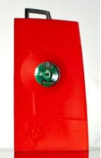

Discovery of BLE Devices
This app demonstrates how to discover Bluetooth Low Energy (BLE) devices within communication range of the app.
You must run this app in the EvoThings client app, or build a Cordova app with the plugin com.evothings.ble. Device with support for Bluetooth 4.0 and Android 4.3 or higher required.

Source Code
You can browse the source code for this example at the EvoThings GitHub repository
The file index.html is the main file of the app.
What You Need
This example requires an Android device with support for Bluetooth 4.0 (which includes BLE). In addition Android 4.3 or later is required, in addition to the hardware.
You need to run the example in the EvoThings client app. Alternatively, you can make a Cordova application if you wish to distribute the app. Then you need to include the Cordova plugin com.evothings.ble. See page EvoThings App for further details.
Please note that BLE support on Android is still not fully mature. As a result, you may experience difficulties running this example. Known problems related to EvoThings Studio include interactively reloading the app from the Workbench. If the app stops working, restart the EvoThings client app.
You also need at least one BLE device you can work with, for example the Texas Instruments SensorTag.